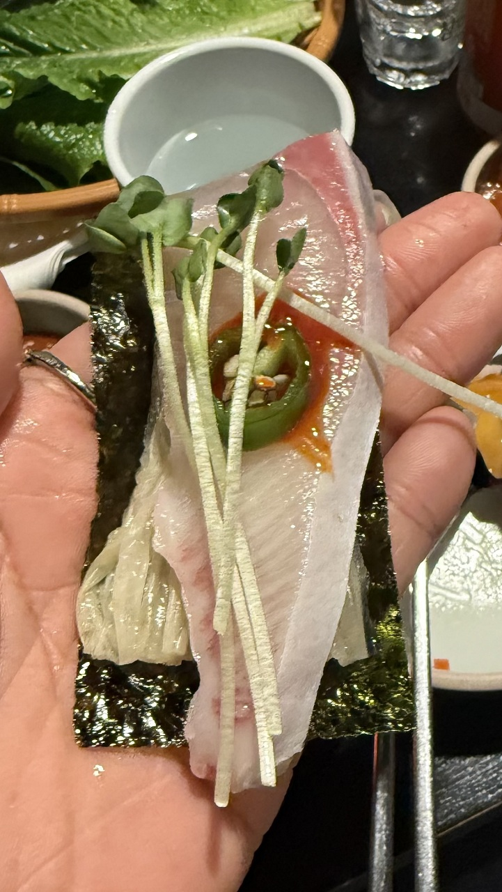
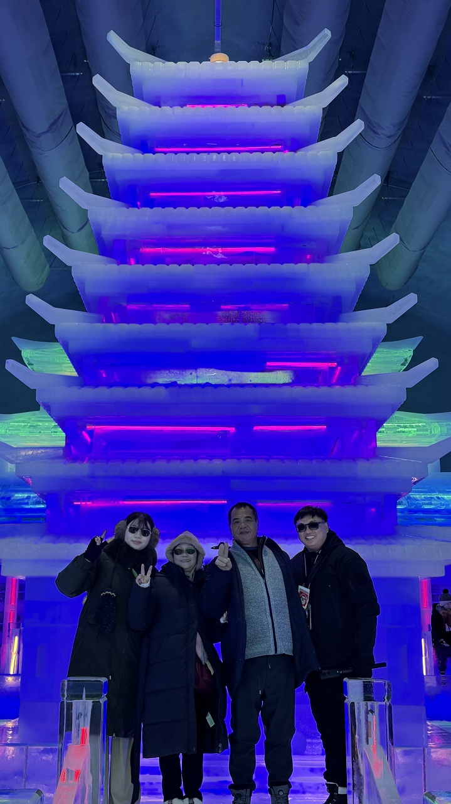
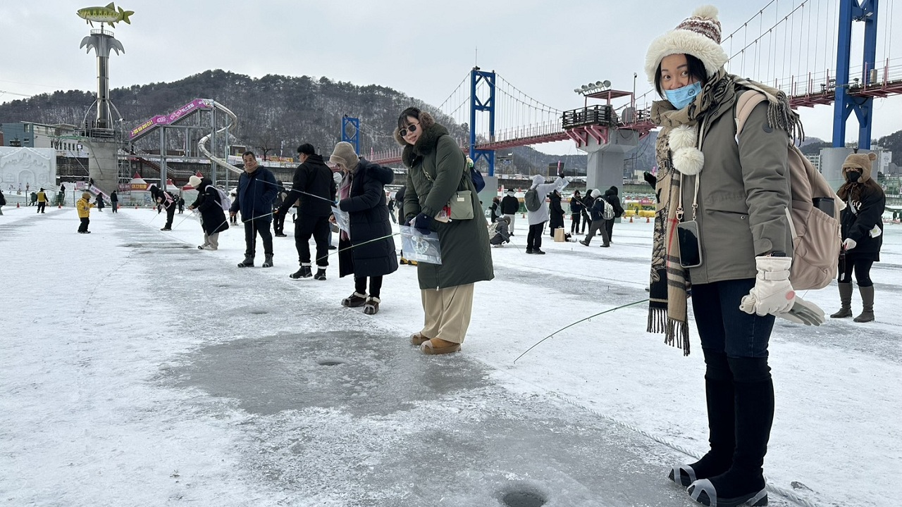
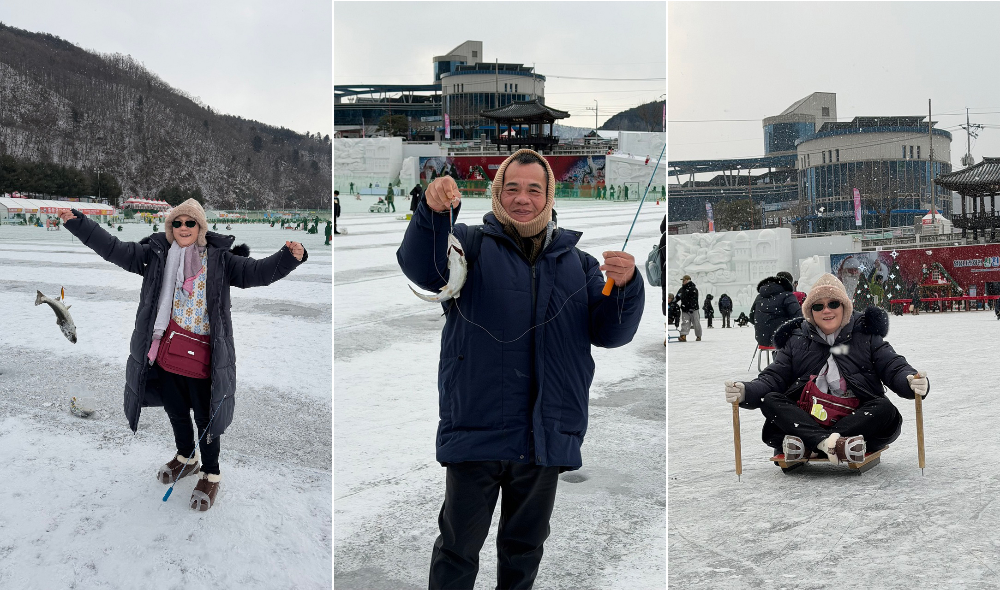
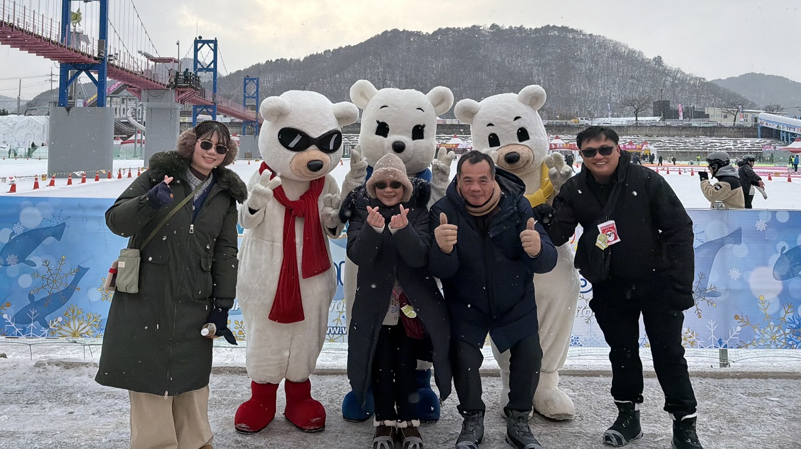
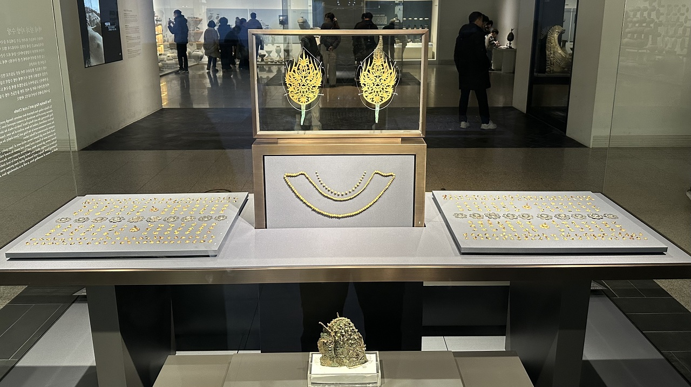
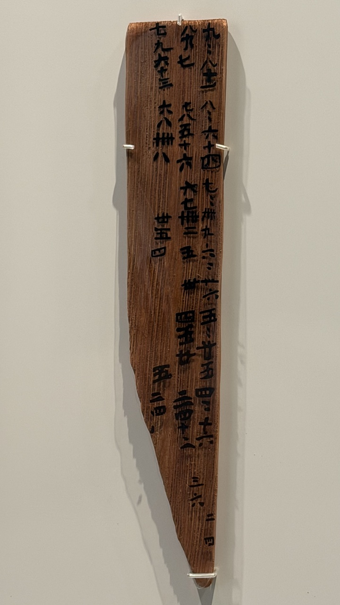
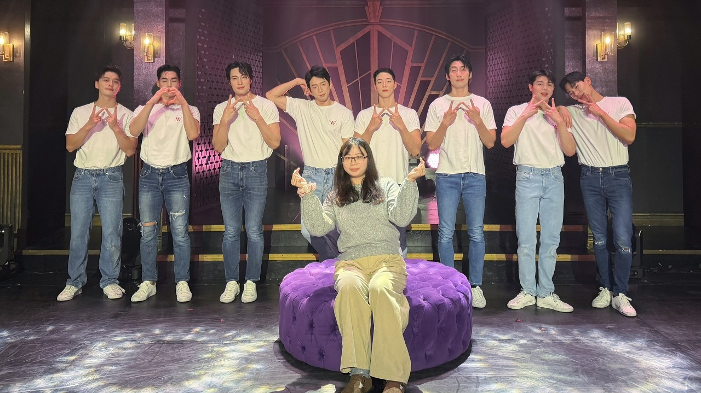

某個寒流報到的夜晚，全家人聚在一起看電視，媽媽盯著螢幕裡的白雪世界，隨口說了句：「好想看雪喔！」在台灣若想賞雪，往往得在寒流來襲時，忍受塞車與蜿蜒山路，才能見到一點點稍縱即逝的銀白。於是，我和弟弟當下便決定帶爸媽去韓國追雪。儘管我造訪韓國多次，卻仍偏愛首爾的冬日，以往我大多選在二月啟程，但那時的首爾雖有雪花，卻常是零星小雪，落地即化，總覺得少了點「置身雪國」的冬日浪漫。這次我特意選在最寒冷、降雪機率最高的一月，帶著全家人直飛首爾。
抵達首爾第一天，我們彷彿得到上天眷顧。剛進入市區，天空就下起鵝毛大雪。那一刻，原定行程瞬間停擺，我們在街邊駐足，顧不得零下低溫，每個人都像孩子般興奮。光是在街頭漫步賞雪，就讓我們開心得邁不開腿，彷彿僅憑這場雪，整趟旅程便已值回票價。
 |
| 首爾雪景 |
 |
| 首爾雪景&我們堆的雪人 |
隨著夜晚來臨，空氣中的寒意更重了幾分，我們迎來這趟旅程的第一餐。我安排了極具挑戰性的「鷺梁津水產市場」，帶家人們品嘗韓國海產。雖然我的韓文還算流利，但要跟老練攤販周旋殺價，始終讓我有些卻步。所幸這次有韓國友人領路，帶領我們攻略這座巨大的海鮮迷宮。
週六的市場人潮洶湧，友人帶我們直奔「全羅商會（전라상회）」。令我驚喜的是，這裡竟然有自動點餐機，明碼標價，從魚肉份量、切片厚度到魚骨是否熬湯，皆能一指搞定，這對恐懼殺價的人來說簡直是超級救星。一月的首爾，是屬於青魽魚（방어）的季節，那盤粉嫩潔白的魚肉上桌時，猶如藝術品般閃爍著油脂光芒。友人教我們道地的韓式吃法：取海苔鋪底，疊上清脆的白泡菜，再放上一片沾了醋辣醬、疊著辣椒與豌豆芽的青魽。白泡菜與醋辣醬的酸辣中和了豐富脂肪的油膩感，海苔的鹹味則引出魚肉鮮甜，另外生章魚與水拌生魚片的爽脆，更讓家人讚不絕口。
 |
| 鷺梁津海鮮大餐 |
 |
| 道地韓式生魚片吃法 |
席間，友人看著我們，語重心長地提醒：「你們要去華川對吧？那裡的冷，是連韓國人都受不了。首爾現在零下八度，但華川可是零下十幾度，是另一個世界啊！保暖絕對不能開玩笑！」這番告誡讓我們瞬間繃緊神經，隔天立刻採買充足的暖暖包及加厚手套，做好面對極寒的準備。
第三天，我們啟程前往「華川山鱒魚慶典（화천산천어축제）」。華川的極寒讓空氣彷彿凍結，巴士窗戶結上一層霜，完全看不見窗外。抵達江原道北部後，滿地白雪再度點燃了大家的熱情，我們在路邊堆起雪球，開啟了冰雪之旅。在導遊領路下，我們穿梭在巨大的冰雕城堡中，欣賞各種冰雕作品，並且體驗室內冰滑梯的快感。
 |
| 華川山鱒魚慶典_室內冰雕展區 |
隨後，一行人轉往戶外慶典場地，品嘗了僅以鹽巴簡單調味、肉質細膩的烤山鱒魚填飽肚子，隨後便開始最期待的活動—冰上釣魚。大家站在厚實的冰孔旁，模擬假餌動作晃動釣竿，彷彿化身姜太公。我枯等半小時一無所獲，反觀平日就常去釣魚的爸媽，袋子中的魚竟已滿了出來。果然，冰上釣魚除了耐心，更需要技巧。除了釣魚，慶典中還有雪橇、溜冰與滑雪板等多項冰上活動，看著家人玩得不亦樂乎，這場極寒裡的慶典，確實是個讓人想帶家人二訪的精彩行程。
 |
| 冰上釣魚 |
 |
| 媽媽釣到最大的一隻魚 爸爸也收穫一條山鱒魚 滑雪板靠的是臂力 |
 |
| 祭典中與吉祥物的合影 |
第四天，我們轉往國立中央博物館，讓行程沉澱進歷史的知性中。百濟、新羅時期的金燦燦的黃金首飾絢爛奪目，除了常見的頭冠、耳環、項鍊外，竟連鞋子也用黃金製作，充分展現了古代韓國的輝煌；然而最令我們駐足且會心一笑的，竟是一塊公元七世紀的「九九乘法表」木簡。在歷史長河中，看見這跨越千年的數學日常，竟有一種莫名親切感。
 |
| 金燦燦的博物館一角 |
 |
| 九九乘法表木簡 |
第五天，我實施了一個大膽的計畫：讓爸爸與弟弟在首爾街頭進行「大叔探險」，而我則帶著媽媽，走進僅限女性入場的「韓國猛男秀（Wild Wild）」劇場。表演全程，我的心律沒有低於100過，幾乎快跳出胸口，舞台上力與美的動態視覺，加上演員精湛的互動，是場絕對的感官饗宴。表演途中我轉頭看向媽媽，她從最初的淡定轉為瘋狂熱烈地歡呼。演出結束後，我們守在「下班路」與演員拍照互動。看著媽媽笑得合不攏嘴，我知道，她內心深處也住著一個愛看帥哥、愛熱鬧的女孩，這趟旅行讓她重拾了久久未見的少女心。
 |
| 猛男秀合影 |
這六天的旅程，從鷺梁津的鮮美到華川的冰爽，從古代博物館的木簡到熱力四射的劇場。回程飛機上，我與家人翻看手機裡的照片：雪花落下的瞬間、爸媽釣魚的笑容、還有與猛男演員的合影。望著窗外漸行漸遠的銀色大地，我明白，無論目的地在哪，只要有家人相伴，即使身處最寒冷的首爾，心裡也是最暖和的。